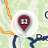
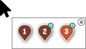
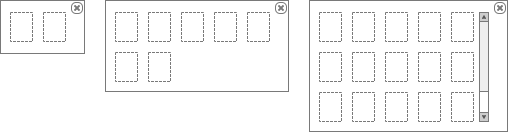

Stručný popis
Mapa pro zobrazení Objednaných služeb, které odpovídají Objednaným službám zobrazeným v .
Poznámka: Základní zobrazení mapy vychází z jejího obecného popisu.
Uživatelské rozhraní
Rozložení
Drátový diagram

Přehled UI komponent
V rámci mapy jsou zobrazeny jednotlivé vrstvy, které jsou dále popsány. Pořadí v rámci tabulky pak odpovídá úrovni, ve které je vrstva vykreslena.
| Callout | Skupina |
|---|---|
| 1 | Lokace objednané služby |
| 2 | Spojnice lokací |
| 3 | Trasa denního výkonu |
Lokace objednané služby
Lokace objednaných služeb jsou v mapě zobrazovány jako body – jejich popis je uveden v tabulce.
| Typ lokace | Popis |
|---|---|
| Místo realizace | Jedná se o Lokaci objednané služby, která představuje umístění odpadu u zákazníka. |
| Likvidační místo | Jedná se o Lokaci objednané služby, kde dochází k vývozům obsahu jednotlivých nádob. |
| Výchozí likvidační místo | Jedná se o Lokaci objednané služby, kde dochází k vyzvednutí nádob s odpadem. |
| Provozovna | Jedná se o Lokaci objednané služby, kde se nachází výchozí stanoviště vozidel a nádob. |
| Místo dočasného uložení | Jedná se o Lokaci objednané služby, kde se nachází místo dočasného uložení (MDU). |
Jednotlivé body představující Lokace objednaných služeb jsou graficky rozlišeny – viz tabulka.
Poznámka: Jednotlivé lokace jsou navíc odlišeny barevně, samotné barvy jsou pak uvedeny v samostatném dokumentu ,na který je dále odkazováno, viz použité barvy a ikony.
| Typ lokace | Drátový diagram | Ikona a barva | Hodnota | Poznámka |
|---|---|---|---|---|
| Místo realizace | Typ lokace/Místo realizace | Pořadové číslo | Jedná se o Lokaci objednané služby typu Místo realizace (atribut Typ lokace). | |
| Místo realizace s časovým oknem | Typ lokace/Místo realizace | Pořadové číslo | Jedná se o Lokaci objednané služby typu Místo realizace (atribut Typ lokace), která má datum realizace omezeno časovým oknem – je splněna alespoň jedna z uvedených podmínek:
Indikace časového okna je pak umístěna v pravém horním rohu, barva se liší dle konkrétní Objednané služby, ikona je společná. Pokud je Lokace objednané služby obsažena v rámci Objednaná služba (atribut Lokace objednané služby), která je ve stavu K naplánování (atribut Stav): Zvýraznění lokace objednané služby/Splněné časové okno. Jinak je vyhodnoceno splnění časového okna v rámci plánu, a to dle hodnoty atributu Splněno časové okno odpovídající Lokace objednané služby: | |
| Místo realizace s datem realizace v minulosti | Typ lokace/Místo realizace | Pořadové číslo | Jedná se o Lokaci objednané služby typu Místo realizace (atribut Typ lokace), která má datum realizace v minulosti a zároveň není stále realizována.
Indikace data realizace v minulosti je pak umístěna v levém horním rohu, barva a ikona je následující: Zvýraznění lokace objednané služby/Služba z minulosti. | |
| Likvidační místo | Typ lokace/Likvidační místo | Je zobrazena pouze ikona | Jedná se o Lokaci objednané služby typu Likvidační místo (atribut Typ lokace). Likvidační místa se mohou opakovat ve velkém množství Objednaných služeb, proto je každé Likvidační místo vykresleno pouze jednou (společně s lokacemi typu Výchozí likvidační místo). | |
| Výchozí likvidační místo | Typ lokace/Výchozí likvidační místo | Je zobrazena pouze ikona | Jedná se o Lokaci objednané služby typu Výchozí likvidační místo (atribut Typ lokace). Likvidační místa se mohou opakovat ve velkém množství Objednaných služeb, proto je každé Likvidační místo vykresleno pouze jednou (společně s lokacemi typu Likvidační místo). | |
| Provozovna |  | Typ lokace/Provozovna | Je zobrazena pouze ikona | Jedná se o Lokaci objednané služby typu Provozovna (atribut Typ lokace). Provozovny se mohou opakovat ve velkém množství Objednaných služeb, proto je každá Provozovna vykreslena pouze jednou. |
| Místo dočasného uložení | Typ lokace/Místo dočasného uložení | Je zobrazena pouze ikona | Jedná se o Lokaci objednané služby typu Místo dočasného uložení (atribut Typ lokace). |
Pořadové číslo
Pořadové číslo je pouze informativní údaj, který slouží ke zvýšení přehlednosti při plánování Denních výkonů. Je získáno dle pořadí, ve kterém byly jednotlivé Objednané služby načteny do přehledu objednaných služeb.
Popis toho, jak jsou pořadová čísla získána a používána, je uveden samostatně – viz Pořadová čísla zobrazených objednaných služeb.
Pokud se jedná o Objednanou službu, která má 2 různá Místa realizace (typicky je Typ úkonu roven hodnotě Manipulace), jsou tato dvě místa Místa realizace rozlišena následovně:
- výchozí Místo realizace je označeno jako a (např. 1a),
- cílové Místo realizace je označeno jako b (např. 1b).
Poznámka:
- Uvedený případ může nastat i v případě, kdy Objednaná služba obsahuje více než jedno Místo realizace. ve výchozím stavu mají všechna Místa realizace stejnou adresu, to ovšem může uživatel změnit. Pokud tedy dojde k situaci, kdy má Objednaná služba více než jednu Lokaci objednané služby typu Místo realizace (atribut Typ lokace) a zároveň má každá tato Lokace objednané služby jinou Adresu (atribut Adresa), dojde ke stejnému postupu v rámci získání pořadového čísla. Jako výchozí je pak označena taková Lokace objednané služby, která má v rámci Objednané služby (atribut Lokace objednané služby) nejnižší hodnotu atributu Pořadí.
- Pokud je odpovídající Objednaná služba rozdělena (případně je vytvořeno MDU), není nutné uvedený případ řešit. Z důvodu rozdělní je totiž každé Místo realizace umístěno ve vlastní Objednané službě.
Překrývající se lokace
V praxi může snadno nastat situace, kdy se na malé ploše vyskytuje více Lokací objednané služby, ty se pak logicky překrývají, pokud je zobrazíme v mapě. Uživatel vidí jen omezenou množinu informací, což není žádoucí.
Pokud tedy nastane uvedená situace, dojde ke zvýraznění takových Lokací objednané služby, které mají ve svém blízkém okolí jinou Lokaci objednané služby. Po kliknutí na takto zvýrazněnou Lokaci objednané služby se zobrazí kontextová nabídka, kde budou načteny a zobrazeny všechny Lokace objednané služby v okolí. Dále je pak uveden podrobný popis.
- Uživatel vyvolá UC, který zahrnuje zobrazení mapy nebo změnu v mapě zobrazených dat.
- Systém vykreslí mapu a její vrstvy dle odpovídajícího UC.
- Systém označí takové Lokace objednané služby, u kterých se v daném okolí vyskytují jiné Lokace objednané služby, a zvýrazní je – viz Zvýraznění lokací objednané služby v mapě.
- Uživatel klikne na Lokaci objednané služby, která byla označena.
- Systém zobrazí nabídku s Lokacemi objednané služby, které se vyskytují v okolí označené Lokace objednané služby, na kterou uživatel klikl (zobrazení zahrnuje i Lokaci objednané služby, na kterou uživatel klikl) – viz Zobrazení nabídky s lokacemi objednané služby.
- Uživatel vyvolá zavření nabídky s Lokacemi objednané služby jedním z těchto způsobů:
- Klikne na tlačítko křížku.
- Klikne na libovolné místo v mapě.
- Systém zavře nabídku s Lokacemi objednané služby.
Získání mezní vzdálenosti
Abychom mohli vyhodnotit, zda se v okolí Lokace objednané služby vyskytuje jiná Lokace objednané služby, musíme definovat mezní vzdálenost, ve které budou Lokace objednané služby hledány. Ta je získána jako součin dále uvedených hodnot:
- Měřítko nastavené v rámci mapy, které je vyjádřeno v jednotkách délky: poskytuje knihovna pro zobrazení mapy.
- Koeficient pro určení mezní vzdálenosti vzhledem k nastavenému měřítku mapy: clusterSizeCoefficient (viz ).
Zvýraznění lokací objednané služby v mapě
Jakmile je potřeba aktualizovat informace zobrazené v mapě, musíme také provést označení jednotlivých Lokací objednané služby:
- Systém získá mezní vzdálenost – viz Získání mezní vzdálenosti.
- Systém nastaví všechny Lokace objednané služby zobrazených v mapě jako neoznačené.
- [FOREACH] Pro všechny Lokace objednané služby zobrazené v mapě:
- Pokud je právě zkoumaná Lokace objednané služby označena:
- Skok na krok 3.
- Systém nalezne všechny Lokace objednané služby, které se vyskytují v okolí právě zkoumané Lokace objednané služby (vzdálenost mezi Lokacemi objednané služby je menší nebo rovna mezní vzdálenosti).
- Pokud je nalezena alespoň jedna Lokace objednané služby:
- Systém nastaví právě zkoumanou Lokaci objednané služby jako označenou.
- Systém nastaví všechny nalezené Lokace objednané služby jako označené (jsou tedy v rámci cyklu přeskakovány, víme, že se v jejich okolí vyskytují jiné Lokace objednané služby).
- Pokud je právě zkoumaná Lokace objednané služby označena:
- Systém graficky zvýrazní všechny označené Lokace objednané služby – viz dále.
Poznámka:
- Pro získání Lokací objednané služby v okolí bodu je použito existující řešení, viz https://github.com/mapbox/leaflet-knn.
- Při získávání Lokací objednané služby v okolí bodu jsou brány v potaz všechny Lokace objednané služby zobrazené v mapě, ne pouze ty neoznačené.
Jednotlivé Lokace objednané služby, které byly v rámci algoritmu označeny, jsou pak graficky zvýrazněny, jak je naznačeno na obrázku. Specifikace samotného zvýraznění je pak následující:
- Barva: Ostatní/Zvýraznění shluku.
- Průhlednost: 50 %.

Poznámka: Zobrazení samotné Lokace objednané služby není změněno, je pouze doplněno o zvýraznění.
Zobrazení nabídky s lokacemi objednané služby
Po kliknutí na označenou Lokaci objednané služby dojde k zobrazení kontextové nabídky. V ní jsou zobrazeny všechny Lokace objednané služby vyskytující se v okolí Lokace objednané služby, na kterou uživatel klikl. Ta je v rámci nabídky zobrazena také.
- Uživatel klikne na Lokaci objednané služby.
- Pokud Lokaci objednané služby není označena:
- Konec toku událostí.
- Systém získá mezní vzdálenost – viz Získání mezní vzdálenosti.
- Systém připraví pomocnou kolekci pro Lokace objednané služby, která je prázdná.
- Systém do pomocné kolekce vloží Lokaci objednané služby, na kterou uživatel klikl.
- Systém nalezne všechny Lokace objednané služby, které se vyskytují v okolí právě zkoumané Lokace objednané služby (vzdálenost mezi Lokacemi objednané služby je menší nebo rovna mezní vzdálenosti) a vloží je do pomocné kolekce.
- Systém zobrazí kontextovou nabídku, ve které jsou načteny všechny Lokace objednané služby.
- Uživatel klikne na tlačítko pro zavření nabídky nebo kamkoliv do mapy.
- Systém zavře kontextovou nabídku.
Náhled kontextové nabídky je uveden na přiloženém obrázku. Jak je vidět, jsou Lokace objednané služby zobrazeny ve stejné podobě jako v rámci mapy (kromě zvýraznění).

Jednotlivé Lokace objednané služby jsou zobrazeny v rámci matice, která je plněna po jednotlivých řádcích. Velikost kontextové nabídky je pak dána množstvím načtených Lokací objednané služby:
- Maximální počet sloupců: 5.
- Maximální počet řádků: Počet řádků není omezen. Pokud jsou obsaženy více jak 3 řádky, je zobrazen posuvník.
Maximální rozměr kontextové nabídky tedy odpovídá matici o 5 sloupcích a 3 řádcích. Možné případy jsou pak naznačeny na obrázku.

Poznámka: Pro budoucí rozvoj je potřeba počítat s tím, že interakce dostupné v rámci mapy musí být dostupné i v této nabídce (např. zobrazení bublinkové nápovědy, označení položky tabulky odpovídající bodu v mapě…).
Interakce v rámci nabídky s lokacemi objednané služby
V rámci kontextové nabídky se vyskytují určitě interakce, které jsou dále popsány, viz tabulka. Samotná interakce je pak provedena pouze v případě, že jsou splněny její vstupní podmínky.
| Interakce | Spuštění | Vstupní podmínky | Chování | Poznámka |
|---|---|---|---|---|
| Označení objednané služby | Kliknutí na Lokaci objednané služby levým tlačítkem myši. | Hodnota atributu Typ lokace odpovídající Lokace objednané služby nebývá jedné z dále uvedených hodnot:
|
| Lokace objednané služby zbývajících typů nejsou v rámci nabídky buď zobrazeny, nebo se mohou vyskytovat ve více Objednaných službách zároveň. Proto kliknutí na ně nezpůsobí výběr Objednané služby v rámci obrazovky. Samotné označení Objednané služby je pak popsáno v rámci Označení objednané služby. |
| Zobrazení detailních informací | Najetí myší na Lokaci objednané služby. | – | – | Zatím nebude implementováno, není předmětem M10. |
Spojnice lokací
V rámci každé Objednané služby jsou jednotlivé Lokace objednané služby propojeny pomocí přímých spojnic, a to v přesně daném pořadí. Samotné vykreslení je pak dále specifikováno:
- Spojnice jsou vykresleny jen pro Objednané služby typu Hákový nakladač nebo Ramenový nakladač (atribut Název entity Typ dopravy – atribut Typ dopravy entity Typ nádoby – atribut Typ nádoby entity Objednaná nádoba – atribut Objednaná nádoba entity Objednaný úkon – atribut Objednaná úkon entity Objednaná služba).
- Pořadí je dáno hodnotou atributu Pořadí entity Lokace objednané služby (atribut Lokace objednané služby entity Objednaná služba). Řazeno je pak vzestupně.
Spojnice jsou pak vykresleny pomocí přímých spojnic a jejich barva se liší dle stavu konkrétní Objednané služby (atribut Stav):
- K naplánování: Spojnice lokací/Nenaplánovaná.
- Jinak: Spojnice lokací/Naplánovaná.
Poznámka: Barvy, na které je odkazováno, jsou uvedeny samostatně, viz použité barvy a ikony.
Trasa denního výkonu
V rámci Přehledu denních výkonů je možné označit jeden nebo více Denních výkonů – to způsobí zobrazení odpovídajících tras zvolených Denních výkonů v rámci mapy.
- V mapě jsou zobrazeny trajektorie všech v přehledu označených Denních výkonů.
- Denní výkon, který byl v přehledu označen jako poslední, je zvýrazněn (zvýraznění je provedeno pomocí bílého orámování trajektorie).
Aby bylo možné trajektorii zobrazit, musí Denní výkon splňovat všechny dále uvedené podmínky:
- V rámci Denního výkonu je obsažena alespoň jedna Položka denního výkonu (atribut Položky denního výkonu).
Dále je pak uveden popis, jakým způsobem jsou trasy Denních výkonů vykresleny:
- Pro všechny Denní výkony, které mají být vykresleny:
- Systém vykreslí trajektorii Denního výkonu – viz Vykreslení trasy denního výkonu. Na vstup jsou pak předány následující informace:
- Denní výkon: právě zkoumaný Denní výkon.
- Barva: Barva vykreslené trajektorie vychází z mapy s denními výkony – v mapě jsou při vykreslení Denním výkonům přiřazeny určité barvy, ty odpovídají i v rámci této mapy – viz Barva trasy denního výkonu.
- Zobrazit trasu: viz nástrojová lišta, položka Denní výkony, dílčí nastavení Zobrazení trasy.
- Naznačit směr: viz nástrojová lišta, položka Denní výkony, dílčí nastavení Naznačení směru.
- Systém vykreslí trajektorii Denního výkonu – viz Vykreslení trasy denního výkonu. Na vstup jsou pak předány následující informace:
- Systém zvýrazní trajektorii Denního výkonu, který byl v Přehledu denních výkonů označen jako poslední (zvýraznění je provedeno pomocí bílého orámování trajektorie).
Nástrojová lišta
Nástrojová lišta mapy vychází z jejího obecného popisu. Navíc je doplněna o možnost rozšířeného nastavení, které je k dispozici ve skupině Vrstvy této nástrojové lišty.
Drátový diagram

Přehled UI komponent
| Callout | Nadpis | Typ položky | Popis | Výchozí hodnota | Další možná nastavení | Chování | Poznámka |
|---|---|---|---|---|---|---|---|
| 1 | Objednané služby | Rozšířená | Slouží k zobrazení/skrytí Objednaných služeb, konkrétně se jedná o následující vrstvy: Dále je možné změnit nastavení jednotlivých spojnic. | TRUE: je zobrazena vrstva. | Zobrazení spojnic (vrstva Spojnice lokací):
Naznačení směru (vrstva Spojnice lokací):
| Změna provede nastavení odpovídajících vrstev. | – |
| 2 | Denní výkony | Rozšířená | Slouží k zobrazení/skrytí plánované stopy právě označeného Denního výkonu, konkrétně se jedná o následující vrstvy: Dále je možné změnit nastavení jednotlivých spojnic. | TRUE: je zobrazena vrstva. | Zobrazení trasy:
Naznačení směru:
| Změna provede nastavení odpovídajících vrstev. | – |
| 3 | Zobrazit vše
| – | Tlačítko pro zobrazení všech dostupných vrstev. | – | – | Stisknutím je vyvolána změna nastavení odpovídajících vrstev – nastaví uvedené položky do výchozího stavu:
| Nadpis se zobrazuje ve formě bublinkové nápovědy po najetí myši na tlačítko. |
Označení objednané služby
Pokud dojde k označení Objednané služby, jsou zvýrazněny i odpovídající Lokace objednané služby. Označení Objednané služby pak může být provedeno několika způsoby:
- Uživatel klikne levým tlačítkem myši na Lokaci objednané služby v rámci mapy (mimo Lokace objednané služby obsažené ve shluku, viz Překrývající se lokace).
- Uživatel klikne levým tlačítkem myši na Lokaci objednané služby v rámci kontextové nabídky pro shluk mapy (Lokace objednané služby obsažené ve shluku, viz Překrývající se lokace).
- Systém označí Lokace objednané služby jako reakci na určitou situaci (označení Objednané služby v diagramu Denního výkonu a podobně).
Pokud uživatel zvolí požadovanou Lokaci objednané služby, systém označí takovou Objednanou službu, ve které je Lokace objednané služby obsažena (atribut Lokace objednané služby). Označení je pak umožněno pouze pro Lokace objednané služby splňující všechny dále uvedené podmínky zároveň:
- Atribut Typ lokace odpovídající Lokace objednané služby nabývá jedné z dále uvedených hodnot: Místo realizace, Místo dočasného uložení.
Pokud je spuštěn režim hromadného plánování, není možné označovat Objednané služby běžným (tedy tímto) způsobem.
Jednotlivé Lokace objednané služby obsažené v rámci zvolené Objednané služby jsou pak zvýrazněny, jak je naznačen ona obrázku. Specifikace samotného zvýraznění je pak následující:
- Barva: Ostatní/Zvýraznění objednané služby.
- Průhlednost: 50 %.
Zvýraznění Lokací objednané služby obsažených v označené Objednané službě je pak vykresleno nad zvýrazněním shluku (viz Zvýraznění lokací objednané služby v mapě). I v tomto případě však musí být zachováno zobrazení kontextové nabídky shluku po kliknutí do stejné oblasti.
Poznámka: V rámci kontextové nabídky shluku nejsou jednotlivé Lokace objednané služby zvýrazňovány.
Grafický návrh
Revize
23. 2. 2024: Tomáš Nadrchal
| Odkaz | Stručný popis změny/doplnění |
|---|---|
| Lokace objednané služby | Doplněno chování pro nový typ lokace objednané služby (naznačeno modře). |
29. 3. 2021: Tomáš Nadrchal
Provedeny změny v rámci celého dokumentu (naznačeno modře). Viz ID-040: Násobné rozdělení objednané služby.
20. 11. 2018: Tomáš Nadrchal
| Odkaz | Stručný popis změny/doplnění |
|---|---|
| Trasa denního výkonu | Doplněno chování, pokud je označeno více Denních výkonů zároveň (naznačeno modře). |
30. 9. 2018: Tomáš Nadrchal
| Odkaz | Stručný popis změny/doplnění |
|---|---|
| Rozložení | Doplněna nová vrstva zobrazující trasu Denního výkonu (naznačeno modře). |
| Pořadové číslo | Doplněna poznámka k získání pořadového čísla (naznačeno modře). |
| Interakce v rámci nabídky s lokacemi objednané služby | Doplněna možnost označit Objednanou službu v rámci shluku. |
| Trasa denního výkonu | Doplnění popisu vrstvy s trasou právě označeného Denního výkonu. |
| Nástrojová lišta | Doplněn popis nástrojové lišty pro nastavení mapy. |
| Označení objednané služby | Doplněn popis chování při označení Objednané služby. |
30. 7. 2018: Tomáš Nadrchal
| Odkaz | Stručný popis změny/doplnění |
|---|---|
| Překrývající se lokace | Doplněn popis chování pro případy, kdy se překrývají Lokace objednané služby. |
5. 4. 2018: Tomáš Nadrchal
| Odkaz | Stručný popis změny/doplnění |
|---|---|
| Lokace objednané služby | Doplněno chování pro Lokace objednané služby typu Místo dočasného uložení. Projeví se i v následujících dokumentech: |
17. 12. 2018: Tomáš Nadrchal
| Odkaz | Stručný popis změny/doplnění |
|---|---|
| Lokace objednané služby | Aktualizace ikon Lokací objednané služby. Upřesnění chování lokací. |